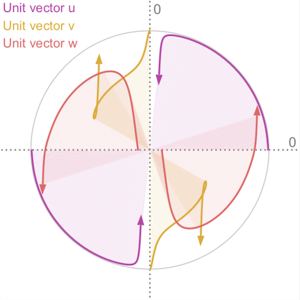

About me
I'm a Ph.D. student working in the Visual Computing group at the University of Konstanz. My area of research is information visualization, with a focus on visualization of uncertainty. I'm curious to work on challenging problems and understand their theoretical and mathematical foundations. Lately, I have been working on visualizations that help us understand machine learning algorithms.CV
-
2016 — now
-
06/2019 — 08/2019
-
2012 — 2015
-
02/2014 — 07/2014
-
2008 — 2012
Publications
-

Misc
When I'm not spending time with my family or working, you often find me with friends in the mountains going backcountry skiing or climbing. I also enjoy traveling and exploring new places. Below are some photos that I took along the way.